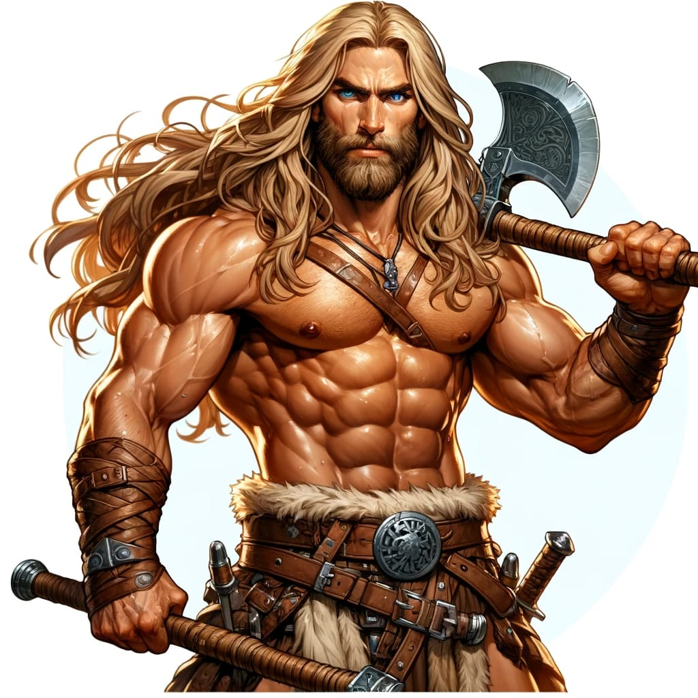
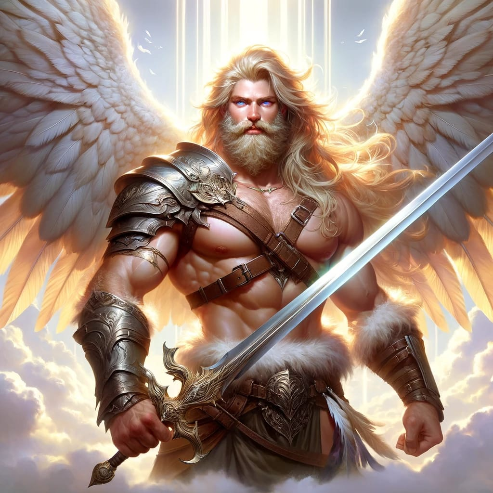
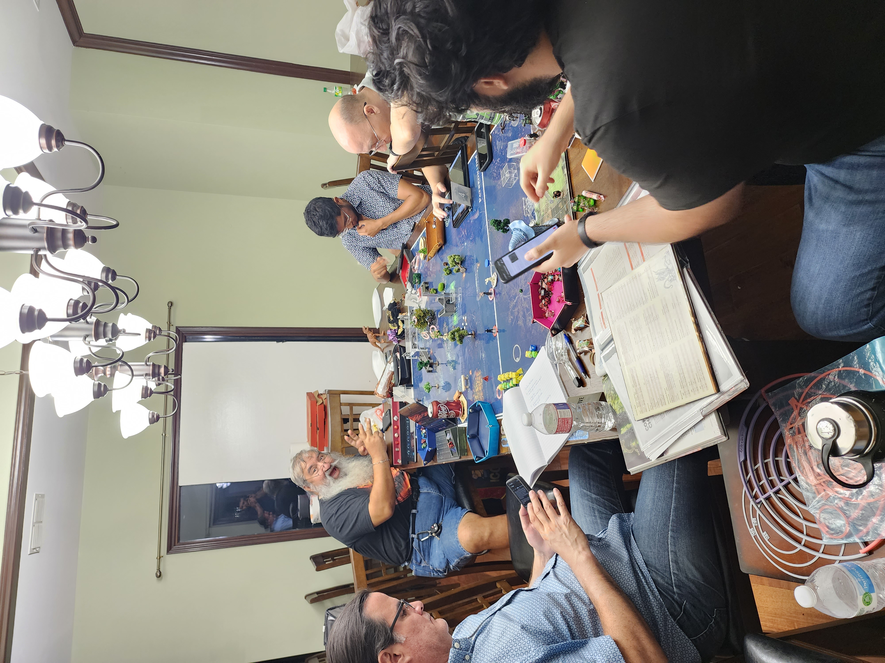

What does the Avalanche do in his free time?
When the Avalanche is not busy with community events or spending time with his family, he enjoys a few hobbies. He enjoys playing Dungeons and Dragons! His alter ego or character is a variant human barbarian that swings first and asks questions later. In one of our adventures, he was able to take down a deity and get control of a legendary sword and he became a god himself!


